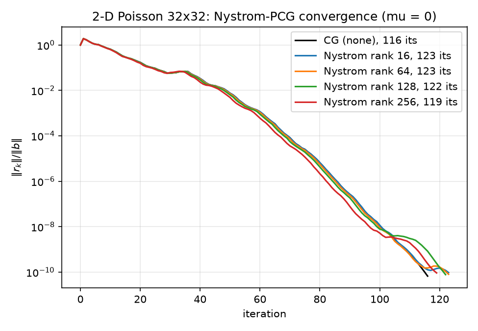
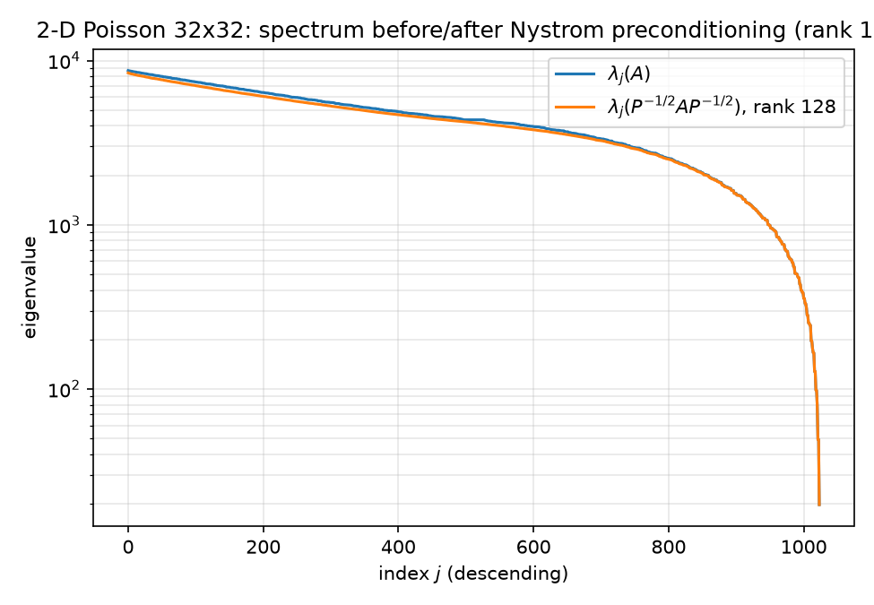

Paper: Frangella, Tropp & Udell, Randomized Nyström Preconditioning, arXiv:2110.02820 (https://arxiv.org/abs/2110.02820) (SIAM J. Matrix Anal. Appl. 44(2), 2023). Code: python/nystrom.py (preconditioner), python/experiments/run_nystrom.py (rank sweep + exact preconditioned spectra), mathematica/nystrom_pcg.wls (independent Wolfram implementation). Results: results/nystrom.json, cross-checked against results/results.json.
Numbering note. In-text citations follow the arXiv rendering of the paper, which numbers algorithms and display equations sequentially: the stabilized Nyström construction is Algorithm 1, and the preconditioner/inverse pair is Eq. (3) at first appearance (their §1.1), restated as Eq. (17) in their §5. The code comments carry section-style labels from the journal typesetting instead — Algorithm 2.1 / Eq. (5.3) in python/nystrom.py and mathematica/nystrom_pcg.wls (with $P$ alone as Eq. (1.3)) — mapped positionally: §5's displayed equations run (5.1)–(5.4) = arXiv (15)–(18), so the $P$/$P^{-1}$ pair Eq. (17) is the journal's (5.3), and §1.1's Eq. (3) is (1.3). (An earlier .wls header citation of "(5.2)" — which is the optimal low-rank preconditioner's condition number, arXiv (16) — was off by one and has been corrected.) Theorem environments are per-section in both renderings; Lemma 2.1, Theorem 5.1 and Proposition 5.3 are cited as printed.
TL;DR. We implement the stabilized single-pass Nyström approximation (their Algorithm 1) and the Nyström preconditioner (their Eq. 17) exactly, verify the construction against exact dense eigensolves, and run it on the 32×32 2-D Poisson problem at ranks {16, 64, 128, 256}. It loses to plain CG on every rank (119–123 iterations vs 116) even though the exact preconditioned condition number is (marginally) smaller (407.46–439.62 vs 440.69). This is not a bug — it is the predicted behavior on the adversarial input: the discrete Laplacian's spectrum decays slowly from the top, so low-rank deflation buys almost nothing, and at $\mu = 0$ the effective dimension is the full problem size, putting the experiment deliberately outside the paper's theory. The negative result is the point of this report; the section Where Nyström-PCG actually shines explains the regime the method was built for.
Contrast with the sibling experiments on the identical problem instance: ILU converges in 5 iterations (05-classical-preconditioners.md) and the neural preconditioner in 30 under flexible CG (06-neural-preconditioner.md).
Given symmetric PSD $A \in \mathbb{R}^{n \times n}$ and a test matrix $\Omega \in \mathbb{R}^{n \times \ell}$, the (column) Nyström approximation is
$$ \hat{A} \;=\; A\langle\Omega\rangle \;=\; (A\Omega)\,(\Omega^{\mathsf T} A \Omega)^{+}\,(A\Omega)^{\mathsf T}, $$
the best approximation of $A$ that agrees with $A$ on the sketch: it is the PSD matrix whose range is $\mathrm{range}(A\Omega)$ and which matches the "measurement" $\Omega^{\mathsf T} A \Omega$. Two structural facts from the paper's Lemma 2.1 drive everything downstream:
With a Gaussian $\Omega$, $\hat{A}$ is a near-optimal rank-$\ell$ approximation when the spectrum of $A$ decays fast past index $\ell$; the error $E = A - \hat{A} \succeq 0$ is controlled by the tail $\sum_{j>\ell}\lambda_j$ (their Sec. 2 / the Halko–Martinsson–Tropp analysis). Only $\ell$ mat-vecs with $A$ are needed — no factorization, no explicit entries — which is the whole appeal: for our 5-point stencil each mat-vec is $\sim 5n$ flops.
The naive formula above is numerically treacherous: $\Omega^{\mathsf T} A \Omega$ can be nearly singular when $A$ has small eigenvalues, and forming the pseudoinverse squares the trouble. Algorithm 1 of the paper is the numerically stable reformulation, and python/nystrom.py follows it step for step.
NystromPreconditioner.__init__python/nystrom.py lines 96–148. The nine steps (numbered as in the class docstring, lines 30–41):
rng = np.random.default_rng(seed)
omega = rng.standard_normal((n, rank)) # step 1
omega, _ = np.linalg.qr(omega) # step 2: thin QR
y = A @ omega # step 3: rank matvecs
nu = np.spacing(np.linalg.norm(y, "fro")) # step 4: eps(||Y||_F)
rank sparse mat-vecs.np.spacing returns the ulp at that magnitude, i.e. $\approx 2^{-52}\lVert Y\rVert_F$) — verbatim line 6 of the paper's Algorithm 1, nu = eps(norm(Y,'fro')). The Mathematica port uses the more conservative $\nu = \sqrt{N}\,\varepsilon_{\text{mach}}\lVert Y\rVert_F$ (see §7), a factor $\sim\sqrt{N}$ larger. Both are machine-precision scale, both are subtracted off in step 9, and a retry loop (below) escalates $\nu$ if Cholesky fails.for _ in range(4):
y_nu = y + nu * omega # step 5
try:
c = sla.cholesky(omega.T @ y_nu, lower=False) # step 6
break
except np.linalg.LinAlgError:
nu *= 100.0
else:
raise np.linalg.LinAlgError(...)
b_mat = sla.solve_triangular(c, y_nu.T, trans="T", lower=False).T # step 7
u, sigma, _ = np.linalg.svd(b_mat, full_matrices=False) # step 8
lams = np.maximum(0.0, sigma**2 - nu) # step 9
The $\mu = 0$ guard (lines 135–148, rationale in the docstring lines 54–62). Step 9's clip can produce exact zeros, and the preconditioner formula below divides by $\hat\lambda_j + \mu$ — singular at $\mu = 0$. The implementation drops nonpositive eigenpairs rather than flooring them: since sigma is descending, positives form a prefix, and rank_eff = count_nonzero(lams > 0) (line 137, only at $\mu=0$; at $\mu>0$ all rank pairs are kept). Dropping treats unresolved directions as part of $\mathrm{range}(U)^\perp$, on which $P$ acts as the identity anyway — structurally consistent with Eq. (17) — whereas flooring at $\nu$ would inject a machine-precision scale ($\sim 10^{-12}$) into the preconditioned spectrum and destroy it. In the degenerate case where everything is dropped ($\hat{A}=0$ at $\mu=0$), the preconditioner degrades to the identity (lines 139–143). In our runs on the PD Laplacian this guard never fires: all sketch eigenvalues are far above $\nu$, so rank_eff == rank throughout.
With $\hat{A} = U\hat\Lambda U^{\mathsf T}$ ($U$ orthonormal, $n\times\ell$), $\hat\lambda_\ell$ the smallest retained Nyström eigenvalue, and regularizer $\mu \ge 0$ for the system $(A+\mu I)x = b$, the paper's preconditioner (Eq. 17; first displayed as Eq. 3) is
$$ P \;=\; \frac{1}{\hat\lambda_\ell + \mu}\, U\,(\hat\Lambda + \mu I)\,U^{\mathsf T} \;+\; \big(I - UU^{\mathsf T}\big), \qquad P^{-1} \;=\; (\hat\lambda_\ell + \mu)\, U\,(\hat\Lambda + \mu I)^{-1} U^{\mathsf T} \;+\; \big(I - UU^{\mathsf T}\big). $$
(Inverse by inspection: $P$ acts as the scalar $(\hat\lambda_j+\mu)/(\hat\lambda_\ell+\mu)$ on the $j$-th column of $U$ and as the identity on $\mathrm{range}(U)^\perp$; both actions invert independently.)
Matrix-free apply (python/nystrom.py lines 150–172): folding the two terms,
$$ P^{-1}r \;=\; U\Big[(\hat\lambda_\ell+\mu)(\hat\Lambda+\mu I)^{-1} - I\Big]U^{\mathsf T} r \;+\; r \;=\; U\,(d \odot U^{\mathsf T} r) \;+\; r, \qquad d_j = \frac{\hat\lambda_\ell + \mu}{\hat\lambda_j + \mu} - 1, $$
which is exactly lines 169–170 (w = self._u_act.T @ r; return self._u_act @ (self._d * w) + r), with $d$ precomputed once at line 148. Cost per application: two skinny GEMVs, $O(n\,\ell_{\text{eff}})$, no $n\times n$ objects ever formed. __call__ = apply (line 172) lets the object drop directly into pcg(A, b, M=pre) (python/pcg.py line 15).
Consider first the idealized case where the Nyström factors are exact: $U$ = the top-$\ell$ eigenvectors of $A$ and $\hat\lambda_j = \lambda_j$. Then $A + \mu I$ and $P$ commute, and the preconditioned operator's eigenvalues are, mode by mode (eigenvalues of $A$ in descending order $\lambda_1 \ge \cdots \ge \lambda_n$):
So the preconditioned spectrum is $\{\lambda_\ell+\mu\ (\text{multiplicity }\ell)\} \cup \{\lambda_{\ell+1}+\mu, \dots, \lambda_n+\mu\}$, whose maximum is the deflated cluster $\lambda_\ell+\mu$ (since $\lambda_\ell \ge \lambda_{\ell+1}$), giving
$$ \kappa\big(P^{-1/2}(A+\mu I)P^{-1/2}\big) \;=\; \frac{\lambda_{\ell} + \mu}{\lambda_n + \mu}. $$
The optimal rank-$\ell$ deflation preconditioner of the paper's Sec. 5.1 normalizes by $\lambda_{\ell+1}+\mu$ instead of $\lambda_\ell+\mu$, parking the deflated modes at $\lambda_{\ell+1}+\mu$ — flush with the top of the untouched part of the spectrum — and achieving the slightly better
$$ \kappa_{\text{opt}} \;=\; \frac{\lambda_{\ell+1} + \mu}{\lambda_n + \mu}, $$
a hard floor: no rank-$\ell$ preconditioner of this form can do better. (On our spectrum $\lambda_\ell \approx \lambda_{\ell+1}$ — the top is dense, §5 — so the two normalizations are practically indistinguishable.) The experiment script computes this floor exactly at line 104 of python/experiments/run_nystrom.py (kappa_opt = eigs_a[::-1][rank] / eigs_a[0]) and stores it as kappa_optimal_rank_ell in results/nystrom.json.
The real Nyström $P$ replaces the unknown $\lambda_{\ell+1}$ by the computable proxy $\hat\lambda_\ell$ (which satisfies $\hat\lambda_\ell \le \lambda_\ell$ by Lemma 2.1) and uses randomized estimates $U, \hat\Lambda$ instead of exact eigenpairs; the sketch error $E = A - \hat{A}$ leaks un-deflated energy back into the top of the spectrum, so the measured $\kappa$ sits between the optimal floor and the unpreconditioned value — precisely what the numbers in §6 show.
The choice of the $(\hat\lambda_\ell+\mu)$ normalization is what makes $P$ act as the identity on $\mathrm{range}(U)^\perp$ in a spectrally consistent way: the deflated modes land at $\hat\lambda_\ell + \mu$, which abuts the untouched part of the spectrum ($\lambda_{\ell+1}+\mu \le \lambda_\ell + \mu \approx \hat\lambda_\ell + \mu$) instead of opening a gap. Their Proposition 5.3 turns this into a deterministic bound on $\kappa(P^{-1/2}A_\mu P^{-1/2})$ in terms of $\hat\lambda_\ell$, $\mu$, and $\lVert E\rVert$.
Since $P^{-1}$ has a closed-form eigendecomposition, so does its principal square root:
$$ P^{-1/2} \;=\; I + U\big(\sqrt{s} - 1\big)U^{\mathsf T}, \qquad s_j = \frac{\hat\lambda_\ell + \mu}{\hat\lambda_j + \mu}, $$
implemented in preconditioned_spectrum (python/experiments/run_nystrom.py lines 39–66). The experiment forms the dense $1024\times1024$ product $P^{-1/2} A P^{-1/2}$, symmetrizes it ($\tfrac12(S+S^{\mathsf T})$, killing roundoff asymmetry), and calls eigvalsh — guaranteed-real eigenvalues, unlike a nonsymmetric eig(P^{-1}A). Every kappa_precond quoted below is an exact dense eigensolve, not an estimate.
The paper's headline result (Theorem 5.1): define the effective dimension
$$ d_{\mathrm{eff}}(\mu) \;=\; \operatorname{tr}\!\big(A(A+\mu I)^{-1}\big) \;=\; \sum_{j=1}^{n} \frac{\lambda_j}{\lambda_j + \mu}, $$
the "number of eigenvalues that matter at regularization level $\mu$." If the sketch size satisfies $\ell = 2\lceil 1.5\, d_{\mathrm{eff}}(\mu)\rceil + 1$, then
$$ \mathbb{E}\,\kappa\big(P^{-1/2}(A+\mu I)P^{-1/2}\big) \;<\; 28, $$
i.e. PCG converges in $O(1)$ iterations independent of $n$ and of $\kappa(A)$ (the constant 28 gives a residual reduction factor $\approx (\sqrt{28}-1)/(\sqrt{28}+1) \approx 0.68$ per iteration, ~60 iterations for $10^{-10}$). The docstring of python/nystrom.py records this prescription at lines 72–73.
The theorem is powerful exactly when $d_{\mathrm{eff}}(\mu) \ll n$, which happens when the spectrum decays fast past some index, or $\mu$ is large enough to drown the tail — the regularized least-squares / kernel-ridge regime the paper targets.
Our experiment sits deliberately outside this regime. We solve the pure Poisson system, $\mu = 0$, where $d_{\mathrm{eff}}(0) = \operatorname{rank}(A) = n^2 = 1024$ — the full dimension. The theorem's prescription would be $\ell = 2\lceil 1.5 \cdot 1024\rceil + 1 = 3073$ test vectors for a $1024$-dimensional problem, i.e. the theory declines to promise anything at any useful rank. Even artificially regularizing doesn't help: computing $d_{\mathrm{eff}}$ from the analytic Laplacian spectrum (verified in 02-eigenvalues.md) gives $d_{\mathrm{eff}}(\mu) = 1014.4$ at $\mu = \lambda_{\min} = 19.72$, $987.7$ at $\mu = 0.01\lambda_{\max}$, and still $322.2$ at the absurd $\mu = \lambda_{\max} = 8692.3$. There is no $\mu$ at which this operator has a small effective dimension — which is a statement about the shape of its spectrum:
From 02-eigenvalues.md: the eigenvalues of $A$ are
$$ \lambda_{k,l} \;=\; \frac{4}{h^2}\left[\sin^2\!\frac{k\pi}{2(n+1)} + \sin^2\!\frac{l\pi}{2(n+1)}\right], \qquad k,l = 1,\dots,n,\quad h = \tfrac{1}{n+1}, $$
verified numerically to $2.73\times10^{-11}$ against the dense eigensolve. For $n=32$: $\lambda_{\min} = 19.724$, $\lambda_{\max} = 8692.28$, $\kappa = 440.69$.
The number of eigenvalues below a level $t$ grows like the area of a quarter disk in $(k,l)$ frequency space (Weyl counting), so the counting function is concave from below — eigenvalues are sparse at the bottom and dense at the top. Concretely, from the analytic spectrum:
Nyström preconditioning is top-down surgery: it flattens the largest $\ell$ eigenvalues and leaves the rest. On a spectrum that decays slowly from the top, the optimal-deflation floor $\kappa_{\text{opt}}(\ell) = \lambda_{\ell+1}/\lambda_{\min}$ barely moves:
| rank $\ell$ | $\lambda_{\ell+1}$ | $\kappa_{\text{opt}} = \lambda_{\ell+1}/\lambda_{\min}$ | vs $\kappa(A) = 440.69$ |
|---|---|---|---|
| 16 | 8460.02 | 428.91 | −2.7% |
| 64 | 7804.27 | 395.67 | −10.2% |
| 128 | 7093.02 | 359.61 | −18.4% |
| 256 | 5885.92 | 298.41 | −32.3% |
(The $\kappa_{\text{opt}}$ column is kappa_optimal_rank_ell in results/nystrom.json; the $\lambda_{\ell+1}$ values are from the analytic formula and match.) Even a perfect rank-256 deflation — exact top eigenvectors, zero sketch error — would leave $\kappa = 298$, predicting an iteration reduction of only $\sqrt{298/441} \approx 18\%$. The flat top of the Laplacian spectrum, not the randomized sketch, is what caps the achievable gain — this is spelled out in the comment at python/experiments/run_nystrom.py lines 98–103 and in the module docstring of python/nystrom.py lines 13–20, both written before the run as the honest expectation.
Note the contrast with what CG itself exploits: CG loves clustered eigenvalues anywhere in the spectrum and effectively deflates well-separated extremes on its own (see 04-krylov-and-pcg.md). A preconditioner that turns "top 128 spread over $[7093, 8692]$" into "128 copies of $\hat\lambda_{128}$" barely changes what the Chebyshev bound sees, and CG was already handling that dense top cluster efficiently.
Setup (python/experiments/run_nystrom.py lines 69–115): poisson_2d(32) ($N=1024$), GRF right-hand side grf_rhs(32, alpha=2.0, tau=3.0, seed=42) (see 03-gaussian-random-fields.md), $\mu = 0$ (valid: $A$ is positive definite), Nyström seed 0, PCG from python/pcg.py to relative residual $10^{-10}$, maxiter 2000.
From results/nystrom.json, with wall/setup times from results/results.json (canonical.cg_nystrom_rank*):
| method | iterations | final relres | $\kappa$ exact (preconditioned) | $\kappa_{\text{opt}}$ (rank-$\ell$ floor) | setup (s) | solve wall (s) |
|---|---|---|---|---|---|---|
| CG (none) | 116 | 6.667e-11 | 440.69 | — | 0 | 0.00117 |
| Nyström rank 16 | 123 | 9.518e-11 | 439.62 | 428.91 | 0.00074 | 0.00184 |
| Nyström rank 64 | 123 | 8.005e-11 | 434.52 | 395.67 | 0.00418 | 0.00188 |
| Nyström rank 128 | 122 | 7.727e-11 | 426.58 | 359.61 | 0.01156 | 0.00200 |
| Nyström rank 256 | 119 | 9.183e-11 | 407.46 | 298.41 | 0.02384 | 0.00233 |
All four preconditioned solves converge and match spsolve to relerr ≤ 2.6e-11 (worst case 2.54e-11, at rank 256; results/results.json). Three observations, in increasing order of interest:
(a) Measured $\kappa$ sits between the optimal floor and $\kappa(A)$, closer to $\kappa(A)$. At rank 128: 426.58 measured vs 359.61 optimal vs 440.69 unpreconditioned — the sketch recovers only ~17% of the (already small) available gain. This is the Lemma 2.1 undershoot plus sketch error at work: with no spectral gap anywhere in the dense top of the spectrum, the Gaussian sketch's eigenvector estimates mix heavily among near-degenerate modes, $\hat\lambda_j$ undershoots $\lambda_j$, and the residual $E = A - \hat{A}$ keeps un-deflated energy near the top.
(b) All Nyström variants take MORE iterations than plain CG despite smaller exact $\kappa$. The $\sqrt{\kappa}$ heuristic predicts $116 \cdot \sqrt{\kappa_P/440.69} = \{115.9,\ 115.2,\ 114.1,\ 111.5\}$ iterations for ranks $\{16,64,128,256\}$; measured is $\{123, 123, 122, 119\}$ — a consistent ~7-iteration penalty. $\kappa$ bounds are worst-case over eigenvalue distributions; actual CG iteration count depends on the whole distribution. The preconditioner slightly smears the spectrum (randomized $\hat\lambda_j$ scatter the deflated modes around $\hat\lambda_\ell$ rather than collapsing them onto one point, and perturb the complement through $E$), degrading the clustering that plain CG was exploiting, and at this scale that loss outweighs the 0.2–7.5% $\kappa$ gain. Wall-clock tells the same story with interest: every Nyström solve is slower per-iteration too (the $O(N\ell)$ apply), so rank 256 costs 0.0238 s setup + 0.0023 s solve vs plain CG's 0.0012 s total — a net 22× slowdown for a nominally better $\kappa$.
(c) The sanity-check anomaly. The suite's strict check "Nyström iterations strictly decrease with rank" fails: the counts $[123, 123, 122, 119]$ tie between ranks 16 and 64 (results/results.json → sanity_checks.nystrom_strictly_decreasing_with_rank: false). The relaxed check — non-increasing with a strict overall decrease — passes (nystrom_noninc_and_overall_decrease: true) and is the one asserted in run_all.py; the strict version is computed and reported rather than crashing the suite. The tie is exactly what the $\kappa$ column predicts: between ranks 16 and 64 the exact condition number moves only from 439.62 to 434.52 (1.2%), i.e. $\sqrt{\kappa}$ moves by 0.6% — a predicted gap of ~0.7 iterations, below one iteration of resolution. See 08-results.md for the full sanity-check table.

The convergence histories are near-indistinguishable for the first ~100 iterations — the black CG(none) curve is hidden under the colored ones — and the curves only fan out in the last decade, where rank 256 (red) finishes at 119 and the low ranks trail to 123. The preconditioner is doing almost exactly nothing, visually.

The spectrum plot is the punchline: $\lambda_j(P^{-1/2}AP^{-1/2})$ (orange) runs just below $\lambda_j(A)$ (blue) — a visible but modest depression that is not confined to the deflated top 128 indices but smears over roughly the top ~600–700 of 1024 (the sketched eigenvectors mix among near-degenerate modes, spreading the deflation down-spectrum) — before the two curves merge on the tail. Nowhere does the spectrum change shape. Compare the NPO spectrum figure in 06-neural-preconditioner.md, where the preconditioned eigenvalue spread collapses from 440.7 to 12.6 — that is what a spectrum-transforming preconditioner looks like; this is what deflation on a flat-top spectrum looks like.
mathematica/nystrom_pcg.wls is an independent implementation against the identical problem (same $A$ construction, same GRF pipeline with SeedRandom[42], same PCGSolve driver as poisson_pcg.wls — a NestWhile over the 5-tuple $(x, r, p, r{\cdot}z, \text{relres})$ with Sow/Reap residual history, which python/pcg.py ports statement for statement). Differences worth flagging:
nu = eps(norm(Y,'fro')), which Python follows verbatim. Both are machine-precision-scale; both are removed in step 9.CholeskyDecomposition[(M + Transpose[M])/2] where $M = \Omega^{\mathsf T}Y_\nu$ — Mathematica's Cholesky is strict about exact symmetry, whereas SciPy's cholesky(..., lower=False) simply consumes the upper triangle (noted at python/nystrom.py lines 110–112), which is an implicit symmetrization.B = Transpose[LinearSolve[Transpose[cholC], Transpose[Ynu]]], matching Python's solve_triangular(c, y_nu.T, trans="T").Min[lams] of the retained set.Function[r, ...] (lines 91–93): a named formal parameter r would be captured by the pattern variable r_ inside PCGSolve's pcgStep — a genuine Wolfram-language scoping trap, documented in the comment. The apply is the algebraically identical $\hat\lambda_\ell\, U(\hat\Lambda^{-1}(U^{\mathsf T}r)) + (r - U(U^{\mathsf T}r))$ form of $P^{-1}$ at $\mu=0$ — the two-term form displayed in the paper's Eq. (17), vs Python's folded $d$-vector form; same operator. (The .wls header cites the journal-style Eq. (5.3) for this formula, with $P$ alone as Eq. (1.3) — see the numbering note at the top.)The script runs a single sketch size $\ell = 128$ and exports figures/mma_nystrom_convergence.png; its no-preconditioner baseline reproduces the 115-iteration CG run of poisson_pcg.wls (final relres $7.379\times10^{-11}$; see 04-krylov-and-pcg.md) — one iteration below Python's 116 because the RNG streams differ between Mathematica and NumPy PCG64, so the GRF right-hand side and the sketch are different draws. For the same reason the Mathematica Nyström count (121 at $\ell=128$) needn't match Python's 122 bit-for-bit; the qualitative "no better than plain CG" outcome is the same.
The fair scorecard: nothing in §6 contradicts arXiv:2110.02820 (https://arxiv.org/abs/2110.02820) — we ran the method on the complement of its design envelope, on purpose, as the "slow-decay" endpoint of this repo's preconditioner comparison. The method is built for:
Property (ii) is exactly where our winner ILU (5 iterations, 05-classical-preconditioners.md) is unusable: spilu needs the explicit sparse matrix and a factorization. The methods are not really competitors — ILU exploits sparsity structure, Nyström exploits spectral decay, and the neural preconditioner (06-neural-preconditioner.md, NPO, arXiv:2502.01337 (https://arxiv.org/abs/2502.01337)) amortizes over a problem distribution. The 2-D Laplacian has sparsity and a problem distribution but no spectral decay from the top — so the ranking on this benchmark (ILU ≫ NPO ≫ none ≥ Nyström) says more about the problem than about the methods.
One caveat the code handles that the benchmark never exercises: at $\mu = 0$ with a genuinely rank-deficient PSD $A$, the theory does not apply at all (their guarantees require $\mu > 0$ or PD $A$); the drop-guard of §2 keeps the implementation well-defined there, degrading gracefully to identity preconditioning.
Previous: 06-neural-preconditioner.md — Next: 08-results.md. Spectrum facts used here are derived and verified in 02-eigenvalues.md; the PCG driver is dissected in 04-krylov-and-pcg.md.
{kind=link}